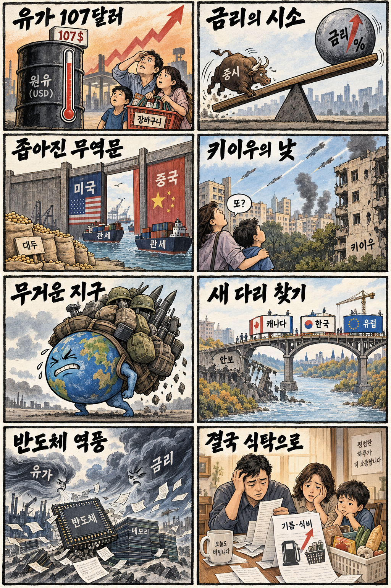
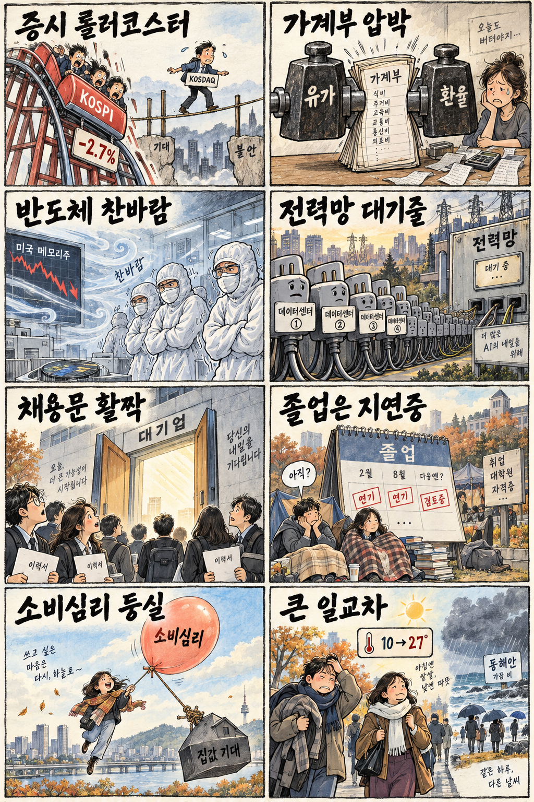

01
크라우드스트라이크 · 248.08→259.25달러 · +4.50%
내용요약 시가 대비 4.50% 상승해 조사 종목 중 가장 강했습니다. 공개 시세로 확인된 상대강도이며 단일 기업 재료는 단정하지 않습니다.
예상여파 국내 보안주 심리에 우호적일 수 있지만 미국 지수 하락일의 개별 강세를 그대로 추격 근거로 쓰지 않습니다.
MORNING_BRIEFING_20260929
작성 시각: 2026-09-29 06:39 KST · 직전 미국 정규장과 2026-09-29 KST 당일 공개 기사 기준
직전 미국 정규장인 9월 28일 뉴욕증시는 다우 -0.67%, S&P 500 -0.77%, 나스닥 -0.92%로 동반 하락했습니다. 미·이란 대치 속 국제유가와 국채금리가 함께 오르며 위험자산의 할인율 부담이 커졌습니다. 한국 증시는 전날 KOSPI가 -2.70% 급락한 뒤라 반도체·성장주의 추가 수급 이탈과 낙폭과대 반등이 충돌할 수 있습니다.
| 지수 | 종가 | 등락률 | 한국 증시 시사점 |
|---|---|---|---|
| 다우존스 | 51,481.51 | -0.67% | 고유가·금리 상승에 경기민감주 변동성 확대 |
| S&P 500 | 7,683.69 | -0.77% | 고유가·금리 상승에 경기민감주 변동성 확대 |
| 나스닥 종합 | 26,820.38 | -0.92% | 기술·반도체 위험선호 약화, 금리 민감도 확대 |
고유가와 국채금리 상승으로 다우 -0.67%, S&P 500 -0.77%, 나스닥 -0.92%를 기록했습니다.
시가 대비로도 -2.38% 밀려 대형주 매도 압력이 강했습니다.
호르무즈 긴장이 물가·환율·금리 경로를 동시에 흔들고 있습니다.
06:30 장전 시점에 기준을 모두 통과한 종목이 없어 현금 관망을 유지합니다.
9월 28일 보고서는 공식 추천을 내지 않았습니다. 게시 당시 판단을 유지하며 사후 종목을 추가하지 않습니다.
| 시장 | 종가 | 등락률 | 기준 |
|---|---|---|---|
| KOSPI | 6,889.74 | -2.70% | 9월 28일 정규장 · 시가 대비 -2.38% |
| KOSDAQ | 846.58 | +0.25% | 9월 28일 정규장 · 시가 대비 +0.13% |
| 다우존스 | 51,481.51 | -0.67% | 미국 9월 28일 정규장 |
| S&P 500 | 7,683.69 | -0.77% | 미국 9월 28일 정규장 |
| 나스닥 종합 | 26,820.38 | -0.92% | 미국 9월 28일 정규장 |
크라우드스트라이크가 시가 대비 +4.50%로 조사 종목 중 가장 강했습니다.
프리포트맥모란이 시가 대비 +3.16% 올라 원자재 내 차별화가 나타났습니다.
메타가 시가 대비 -4.64%로 조사 종목 중 낙폭이 가장 컸습니다.
보잉 -4.27%, 인텔 -3.83%로 금리·경기 우려 속 약세였습니다.
내용요약 시가 대비 4.50% 상승해 조사 종목 중 가장 강했습니다. 공개 시세로 확인된 상대강도이며 단일 기업 재료는 단정하지 않습니다.
예상여파 국내 보안주 심리에 우호적일 수 있지만 미국 지수 하락일의 개별 강세를 그대로 추격 근거로 쓰지 않습니다.
내용요약 시가 대비 3.16% 올라 원자재 관련주 안에서 상대강도를 보였습니다.
예상여파 구리·전력망 관련 관심을 높일 수 있으나 고유가와 금리 상승은 제조업 수요에 부담이 될 수 있습니다.
내용요약 시가 대비 4.64% 하락해 조사 종목 중 낙폭이 가장 컸습니다.
예상여파 대형 인터넷·광고·인공지능 투자주의 밸류에이션 부담이 국내 성장주에도 전이될 수 있습니다.
내용요약 시가 대비 4.27% 하락하며 산업재 내 약세가 두드러졌습니다.
예상여파 항공·산업재의 위험선호를 낮출 수 있으며 유가 상승은 항공 생태계의 비용 부담을 키울 수 있습니다.
내용요약 시가 대비 3.83% 하락해 반도체 업종 내 종목 차별화가 이어졌습니다.
예상여파 국내 반도체를 업종 전체 호재로 일괄 판단하기보다 메모리 가격·수급·제품 경쟁력을 분리해 봐야 합니다.
전날 KOSPI는 6,889.74로 전일 종가 대비 -2.70%, 시가 대비 -2.38% 하락한 반면 KOSDAQ은 +0.25% 상승했습니다. 밤사이 미국 3대 지수와 메모리주가 추가 약세를 보여 대형 반도체·수출주의 수급 부담이 이어질 수 있습니다. 반대로 낙폭과대 반등 수요도 유입될 수 있지만 유가·미 국채금리·원달러 환율이 안정되기 전에는 시초가 반등을 추격하지 않는 편이 안전합니다.
오늘은 추천 없음 — 현금 관망
06:30 장전 시점에는 당일 시가 진입 기준과 호가 유동성, 당일 외국인·기관 수급을 검증할 수 없습니다. 전날 KOSPI 급락과 밤사이 미국 기술주 약세, 고유가·금리 상승이 겹쳐 종합점수 75점·상승확률 60%·손익비 1.5의 문턱을 모두 확인한 후보가 없습니다.
관심 연결종목 사이버보안, 구리·전력망, 원전·데이터센터는 개장 뒤 상대강도 관찰 대상일 뿐 매수 추천이 아닙니다. 시초가 급등 종목은 추격매수하지 않습니다.
호르무즈 긴장 완화 여부와 유가가 물가·환율에 미치는 영향을 봅니다.
밤사이 급등한 금리가 진정되는지 성장주 밸류에이션과 함께 봅니다.
외국인 수급과 대형 반도체의 동반 안정 여부를 확인합니다.
81조 원 규모 인하 품목의 실제 적용과 제외 품목의 후속 협상을 봅니다.
핵심 요약: AMD의 공간지능 투자·인수 보도와 HBM4E 공개는 기술 경쟁의 확장을 보여줍니다. 그러나 미국 메모리주 약세와 고금리 환경은 단기 밸류에이션을 누르고, 데이터센터 전력 수요는 원전 재가동과 인재 양성으로 공급망을 넓히고 있습니다.
내용요약 AMD가 인공지능 연구자 페이페이 리가 이끄는 월드랩스를 약 11조 원에 인수한다는 당일 보도입니다. 공간지능과 월드모델 역량을 확보하려는 행보로 해석됩니다.
예상여파 AI칩 경쟁이 연산 성능에서 학습 데이터와 공간지능 소프트웨어까지 확대될 수 있습니다. 다만 인수 조건과 공식 발표의 세부 내용은 후속 공시가 중요합니다.
내용요약 미국장에서 SK하이닉스 ADR과 마이크론이 동반 약세를 보였다는 당일 보도입니다. 실제 조사에서도 마이크론은 시가 대비 2.01% 하락했습니다.
예상여파 국내 메모리 대형주의 전일 급락 뒤 투자심리를 추가로 누를 수 있어 시초가 반등만 보고 추격하기보다 수급 회복을 확인해야 합니다.
내용요약 SK하이닉스가 TSMC 행사에서 차세대 HBM4E를 공개했다는 당일 산업 보도입니다. 고대역폭 메모리 경쟁이 다음 세대로 이동하고 있습니다.
예상여파 기술 리더십에는 긍정적이지만 단기 주가는 업황 기대뿐 아니라 금리·수급·고평가 부담의 영향을 함께 받을 수 있습니다.
내용요약 미국 스리마일섬 원전 1호기의 835MW 재가동 계획이 환경 관련 관문을 통과했다는 당일 보도입니다.
예상여파 AI 데이터센터 전력 수요가 원전 재가동과 전력망 투자로 연결되는 흐름이 강화될 수 있으나 인허가·공사 일정은 장기 변수입니다.
내용요약 기업 연계 인재 양성과 금융·의료 진출을 내세운 인공지능 중심 대학 전략을 다룬 당일 보도입니다.
예상여파 AI 경쟁의 병목이 모델뿐 아니라 현장형 인재와 산업 데이터로 이동하면서 산학협력의 실행력이 중요해질 수 있습니다.
핵심 요약: 호르무즈 긴장으로 유가가 107달러를 넘나들고 우크라이나 공습이 이어졌습니다. 미중 관세 완화는 제한적 긴장 완화 신호지만 대두 등 핵심 품목은 남았고, 캐나다의 국방 다변화와 중동 외교 갈등이 공급망·안보 지형을 흔들고 있습니다.
내용요약 러시아가 키이우를 포함한 우크라이나 여러 지역을 대낮에 공습해 최소 7명이 숨졌다는 당일 보도입니다.
예상여파 전쟁의 장기화와 민간 피해가 외교 협상 기대를 낮추고 유럽의 방위비·에너지 위험 프리미엄을 유지시킬 수 있습니다.
내용요약 미국과 중국이 약 81조 원 규모 품목의 상호 관세를 낮추기로 했지만 미국산 대두는 대상에서 빠졌다는 당일 보도입니다.
예상여파 긴장 완화 신호에도 농산물과 전략 품목은 협상 카드로 남아 있어 실제 교역 회복은 품목별로 차별화될 수 있습니다.
내용요약 캐나다 총리가 한국·유럽과 협력을 강화해 미국에 대한 국방 의존을 줄이겠다고 밝혔다는 당일 보도입니다.
예상여파 방산 공급망 다변화가 한국 기업에 기회를 줄 수 있지만 계약·예산·현지 생산 조건을 확인해야 합니다.
내용요약 미국이 이란의 호르무즈 관련 7일 계획을 거부한 뒤 국제유가가 배럴당 107달러를 넘었다가 변동했다는 당일 보도입니다.
예상여파 고유가가 물가와 장기금리를 다시 자극하면 주식 밸류에이션과 원화, 운송·화학 업종에 부담이 커질 수 있습니다.
내용요약 이스라엘 총리가 UAE 대통령에게 하마스 기습 사전 경고 보도를 부인해 달라고 요청했다는 당일 보도입니다.
예상여파 중동 외교의 신뢰 갈등이 안보 협력과 중재 구도에 부담을 주며 유가 변동성을 키울 수 있습니다.

핵심 요약: KOSPI 급락과 환율 상승이 금융시장 경계감을 키웠습니다. 대기업 채용계획과 소비심리 반등은 긍정적이지만 졸업유예 증가가 청년 체감고용의 간극을 보여주며, 오늘은 큰 일교차와 동해안 비에 유의해야 합니다.
내용요약 미국 국채금리와 중동 충격이 겹치며 9월 28일 KOSPI가 2.70% 하락하고 원·달러 환율이 1,365원 수준까지 올랐다는 당일 보도입니다.
예상여파 외국인 수급과 대형 반도체가 추가 압력을 받을 수 있어 지수 반등보다 환율·금리의 안정 여부를 먼저 봐야 합니다.
내용요약 하반기 채용계획을 세운 대기업 비중이 37%에서 51%로 높아졌다는 당일 보도입니다.
예상여파 채용 심리 회복에는 긍정적이지만 계획이 실제 신규 채용과 청년 고용으로 이어지는지 확인이 필요합니다.
내용요약 취업 지연 우려로 대학 졸업을 미루는 학생이 4년 새 45% 늘었다는 당일 보도입니다.
예상여파 청년 체감고용 부진이 소비와 주거 독립 시기를 늦출 수 있어 양질의 첫 일자리 확대가 중요합니다.
내용요약 9월 소비심리가 반등했고 집값 상승 기대가 영향을 미쳤다는 당일 보도입니다.
예상여파 내수 심리에는 도움이 될 수 있지만 주거비 기대가 다시 오르면 가계부채와 금리 부담이 동시에 커질 수 있습니다.
내용요약 전국이 대체로 맑지만 아침 최저기온이 10도까지 떨어지고 낮에는 27도까지 오르는 큰 일교차가 예상된다는 당일 예보입니다.
예상여파 출근길 보온과 건강 관리가 필요하며 강원·경북 동해안은 비와 도로 안전에 유의해야 합니다.
